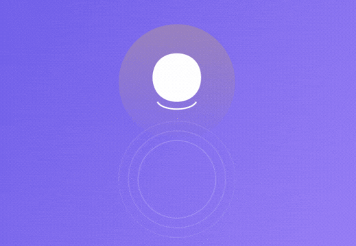

La suite de l'aventure

Après vous être aventuré dans la ZENBOX, vous avez osé relever le défi et explorer de nouvelles perspectives pour commencer votre journée du bon pied.
Vous avez ressenti la magie qui se dégage de l'amplification de vos idées et de vos pensées positives.
Vous avez peut-être même entrepris un voyage intérieur pour rencontrer votre moi futur ou d'autres êtres inspirants remplis de ressources.
Le potentiel qui réside en vous est fascinant, n'est-ce pas ?
Lorsque vous fermez les yeux et laissez votre imagination s'épanouir, vous découvrez des mondes intérieurs riches et surprenants.
Vous respirez dans cette réalité fantastique, observant les détails, écoutant les voix qui vous guident, et ressentant une profonde connexion à votre subconscient.
Plus vous vous engagez dans cet exercice, plus vous révélerez les trésors cachés de votre potentiel.
Votre créativité, votre confiance, votre sagesse intérieure — tout cela peut être libéré grâce à votre pratique régulière de cette exploration.
Maintenant, je vous invite à partager vos expériences, vos réflexions et vos questions.
Votre voix est importante, et vos commentaires peuvent inspirer et aider d'autres personnes qui lisent ces lignes.
Alors, n'hésitez pas à utiliser la section commentaire ci-dessous pour partager vos pensées.